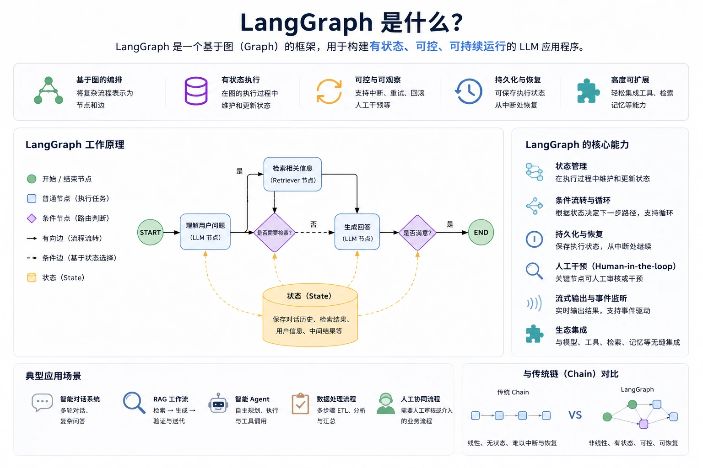

LangGraph Getting Started Tutorial
LangGraph is alow-level Agent orchestration framework developed by the LangChain team, designed specifically for building stateful, long-running AI workflows.
Unlike traditional linear LLM call chains, LangGraph models workflows asDirected Graph：
- Node: Functions that perform specific actions (e.g., calling LLMs, executing tools, processing data)
- Edge: Defines flow paths between nodes, supporting conditional branching
- State: Data shared and passed throughout the workflow
Open-source repository:https://github.com/langchain-ai/langgraph。

Imagine you are conducting a symphony: a traditional LLM Chain is like playing a piece from start to finish, only sequentially; whereas LangGraph is like a conductor who can adjust the performance order at any time based on the live audience's reactions, repeat a certain movement, or jump to a specific passage. It gives AI workflows the wisdom of a "conductor"—capable of looping, branching, and backtracking, truly enabling complex autonomous decision-making.
Why Choose LangGraph?
The table below compares the main differences between traditional LLM Chains and LangGraph:
| Feature | Traditional LLM Chain | LangGraph |
|---|---|---|
| Workflow structure | Linear, unidirectional execution | Graph structure, supports loops |
| State management | Requires manual management | Built-in state persistence |
| Conditional routing | Complex to implement | Native support |
| Human-in-the-loop | Requires additional development | Built-in interrupt support |
| Multi-Agent coordination | Difficult to implement | First-class support |
| Debugging tools | Limited | LangGraph Studio |
Applicable Scenarios
- Chatbots: Needs to remember multi-turn dialogue context
- Autonomous Agent: Can plan, use tools, and iterate thinking
- Multi-Agent system: Multiple AIs collaborate to complete complex tasks
- Approval Workflow: An automated process that requires human review
- Research Assistant: Requires multi-step reasoning and information retrieval
Core Concepts
Before you start writing code, first understand the three core concepts of LangGraph.
Graph
Graph is the blueprint of the entire workflow, defining the complete logical structure of the Agent. It is composed of Nodes and Edges:
StateGraph
|-- Nodes（节点）
| |-- node_a
| |-- node_b
| +-- node_c
+-- Edges（边）
|-- START -> node_a
|-- node_a -> node_b（条件边）
|-- node_a -> node_c（条件边）
+-- node_b -> END
State
State is what runs through the entire graphshared data structure. Each node can read and update State, and the updated State is passed to the next node.
from typing import TypedDict, Annotated
from langgraph.graph import add_messages
class MyState(TypedDict):
messages: Annotated[list, add_messages] # 消息列表（自动追加）
user_name: str # 用户名称
step_count: int # 步骤计数
Annotated[list, add_messages]Indicates that this field usesadd_messagesas a reducer—new messages are appended to the list rather than overwritten. This is the core mechanism of LangGraph state management.Nodes
Nodes are ordinary Python functions that receive the current State and return the updated State (partial fields).
def my_node(state: MyState) -> dict:
# 读取状态
messages = state["messages"]
# 执行操作...
result = "处理结果"
# 返回更新的字段（不需要返回所有字段）
return {"messages": [{"role": "ai", "content": result}]}
Edges
Edges define the flow between nodes:
- Normal edge: fixed path,
node_a -> node_b - Conditional edge: dynamically routes based on the State,
node_a -> node_b 或 node_c - Start edge：
START -> 第一个节点 - End edge：
某节点 -> END
Environment Setup
Install Dependencies
Install LangGraph and related dependencies using a domestic mirror:
# 创建虚拟环境（推荐） python -m venv venv source venv/bin/activate # macOS/Linux # venv\Scripts\activate # Windows # 安装 LangGraph 和 LangChain pip install langgraph langchain langchain-openai python-dotenv -i https://mirrors.aliyun.com/pypi/simple/ # 可选：安装开发工具 pip install langgraph-cli jupyter -i https://mirrors.aliyun.com/pypi/simple/
Configure API Key
In the project root directory, create.enva file, and configure OpenAI and DeepSeek:
# .env 文件内容 # OpenAI 配置（国外用户） OPENAI_API_KEY=sk-xxx OPENAI_BASE_URL=https://api.openai.com/v1 # DeepSeek 配置（国内用户推荐） DEEPSEEK_API_KEY=sk-xxx DEEPSEEK_BASE_URL=https://api.deepseek.com DEEPSEEK_MODEL=deepseek-v4-pro
https://api.deepseek.com(without /v1); LangChain will automatically append the path. The DeepSeek API Key can behttps://platform.deepseek.com/api_keyscreated.Verify Installation
import langgraph
print(f"LangGraph 版本: {langgraph.__version__}")
Your First LangGraph Program
Let's start with the simplest example—a linear workflow with only two nodes.
Example
from typing import TypedDict
# Step 1: Define State
class SimpleState(TypedDict):
message: str
processed: bool
# Step 2: Define node functions
def greet_node(state: SimpleState) -> dict:
"""Welcome node: generates a greeting"""
print(f"[greet_node] Received message: {state['message']}")
return {"message": f"Hello! {state['message']}"}
def process_node(state: SimpleState) -> dict:
"""Process node: mark as processed"""
print(f"[process_node] Processing message: {state['message']}")
return {"processed": True}
# Step 3: Build the graph
builder = StateGraph(SimpleState)
# Add nodes
builder.add_node("greet", greet_node)
builder.add_node("process", process_node)
# Add edges
builder.add_edge(START, "greet")
builder.add_edge("greet", "process")
builder.add_edge("process", END)
# Step 4: Compile the graph
graph = builder.compile()
# Step 5: Run
result = graph.invoke({
"message": "world",
"processed": False
})
print(f"\nFinal result: {result}")
Execution result:
[greet_node] 收到消息: 世界
[process_node] 处理消息: 你好！世界
最终结果: {'message': '你好！世界', 'processed': True}
Visualize Graph Structure
In Jupyter Notebook, you can directly visualize the graph structure:
# 在 Jupyter Notebook 中可视化 from IPython.display import Image Image(graph.get_graph().draw_mermaid_png()) # 或者打印 Mermaid 格式 print(graph.get_graph().draw_mermaid())
State Management
Define State with TypedDict
from typing import TypedDict, Annotated, Optional
from langgraph.graph.message import add_messages
class AgentState(TypedDict):
# 消息历史（add_messages reducer 自动追加而非覆盖）
messages: Annotated[list, add_messages]
# 普通字段（直接覆盖）
user_id: str
session_id: str
# 可选字段
error: Optional[str]
# 计数器（使用 operator.add 作为 reducer）
retry_count: Annotated[int, lambda x, y: x + y]
Define State with Pydantic (Recommended for Production)
from pydantic import BaseModel, Field
from typing import Annotated
from langgraph.graph.message import add_messages
class ProductionState(BaseModel):
messages: Annotated[list, add_messages] = Field(default_factory=list)
user_id: str = ""
confidence_score: float = 0.0
class Config:
arbitrary_types_allowed = True
MessagesState (Built-in Convenience State)
LangGraph provides built-inMessagesState, designed specifically for conversation scenarios:
from langgraph.graph import MessagesState # MessagesState 等价于: # class MessagesState(TypedDict): # messages: Annotated[list[AnyMessage], add_messages] # 直接使用，无需自定义 builder = StateGraph(MessagesState)
Nodes
Regular Function Nodes
def simple_node(state: AgentState) -> dict:
# 读取状态
last_message = state["messages"][-1]
# 执行操作
response = f"收到: {last_message.content}"
# 返回部分状态更新
return {
"messages": [{"role": "assistant", "content": response}]
}
LLM Call Nodes
Example
from dotenv import load_dotenv
from langchain_openai import ChatOpenAI
from langchain_core.messages import SystemMessage
load_dotenv()
# Use DeepSeek model
llm = ChatOpenAI(
model=os.getenv('DEEPSEEK_MODEL', 'deepseek-v4-pro'),
openai_api_key=os.getenv('DEEPSEEK_API_KEY'),
openai_api_base=os.getenv('DEEPSEEK_BASE_URL', 'https://api.deepseek.com'),
temperature=0
)
def llm_node(state: dict) -> dict:
"""Node that calls LLM"""
system_prompt = SystemMessage(content="You are a helpful assistant.")
# Merge system prompt with conversation history
messages = [system_prompt] + state["messages"]
# Call LLM
response = llm.invoke(messages)
return {"messages": [response]}
Async Nodes
import asyncio
async def async_node(state: AgentState) -> dict:
"""异步节点，适合 I/O 密集型操作"""
# 模拟异步操作（如 API 调用、数据库查询）
await asyncio.sleep(0.1)
result = await some_async_api_call(state["messages"][-1].content)
return {"messages": [{"role": "assistant", "content": result}]}
# 使用异步图
result = await graph.ainvoke({"messages": [...]})
Using Classes as Nodes
class RouterNode:
def __init__(self, llm, system_prompt: str):
self.llm = llm
self.system_prompt = system_prompt
def __call__(self, state: AgentState) -> dict:
"""类实例可以作为节点使用"""
messages = [
SystemMessage(content=self.system_prompt),
*state["messages"]
]
response = self.llm.invoke(messages)
return {"messages": [response]}
# 添加类节点
router = RouterNode(llm, "你是一个专业的路由助手。")
builder.add_node("router", router)
Edges and Conditional Routing
Regular Edges
# 固定路径：node_a 完成后始终执行 node_b
builder.add_edge("node_a", "node_b")
# 结束：node_a 完成后图结束
builder.add_edge("node_a", END)
Conditional Edges
Conditional edges are a core feature of LangGraph, dynamically deciding the next step based on the current State.
def route_after_llm(state: AgentState) -> str:
"""
路由函数：根据 LLM 的最新输出决定走哪条路径
返回值必须是已注册节点名称或 END
"""
last_message = state["messages"][-1]
# 如果 LLM 请求使用工具
if hasattr(last_message, "tool_calls") and last_message.tool_calls:
return "tools"
# 否则结束
return END
# 添加条件边
builder.add_conditional_edges(
"llm", # 源节点
route_after_llm, # 路由函数
{
"tools": "tool_executor", # 返回 "tools" 时 -> tool_executor 节点
END: END # 返回 END 时 -> 结束
}
)
Parallel Execution (Fan-out)
# 从一个节点并行分叉到多个节点
builder.add_edge("start_node", "branch_a")
builder.add_edge("start_node", "branch_b")
builder.add_edge("start_node", "branch_c")
# 多个节点汇聚到一个节点（Fan-in）
builder.add_edge("branch_a", "merge_node")
builder.add_edge("branch_b", "merge_node")
builder.add_edge("branch_c", "merge_node")
Complete Conditional Routing Example
Example
from dotenv import load_dotenv
from langgraph.graph import StateGraph, START, END, MessagesState
from langchain_openai import ChatOpenAI
from langchain_core.messages import SystemMessage, HumanMessage
load_dotenv()
# Initialize LLM
llm = ChatOpenAI(
model=os.getenv('DEEPSEEK_MODEL', 'deepseek-v4-pro'),
openai_api_key=os.getenv('DEEPSEEK_API_KEY'),
openai_api_base=os.getenv('DEEPSEEK_BASE_URL', 'https://api.deepseek.com'),
temperature=0.7
)
# Routing function
def classify_intent(state: MessagesState) -> str:
"""Route to different Agents based on user intent"""
last_message = state["messages"][-1]
content = last_message.content.lower()
if "Weather" in content or "Temperature" in content:
return "weather_agent"
elif "Code" in content or "Programming" in content:
return "code_agent"
elif "Goodbye" in content or "Exit" in content:
return "farewell"
else:
return "general_agent"
# Define various Agent nodes
def router_node(state: MessagesState) -> dict:
"""Router node: does no processing, only used to trigger routing decisions"""
return {}
def weather_node(state: MessagesState) -> dict:
"""Weather Agent"""
response = llm.invoke([
SystemMessage(content="You are a weather assistant, friendly in answering weather-related questions. If there is no real-time data, you can provide general advice."),
*state["messages"]
])
return {"messages": [response]}
def code_node(state: MessagesState) -> dict:
"""Code Agent"""
response = llm.invoke([
SystemMessage(content="You are a programming assistant, skilled at answering code questions and providing clear code examples."),
*state["messages"]
])
return {"messages": [response]}
def general_node(state: MessagesState) -> dict:
"""General Agent"""
response = llm.invoke([
SystemMessage(content="You are a friendly AI assistant, able to answer various questions."),
*state["messages"]
])
return {"messages": [response]}
def farewell_node(state: MessagesState) -> dict:
"""Farewell node"""
return {"messages": [{"role": "assistant", "content": "Goodbye! Looking forward to our next conversation."}]}
# Build graph
builder = StateGraph(MessagesState)
# Add nodes
builder.add_node("router", router_node)
builder.add_node("weather_agent", weather_node)
builder.add_node("code_agent", code_node)
builder.add_node("general_agent", general_node)
builder.add_node("farewell", farewell_node)
# Add edges
builder.add_edge(START, "router")
builder.add_conditional_edges(
"router",
classify_intent,
{
"weather_agent": "weather_agent",
"code_agent": "code_agent",
"general_agent": "general_agent",
"farewell": "farewell",
}
)
# End after all agent nodes have been processed
for node in ["weather_agent", "code_agent", "general_agent", "farewell"]:
builder.add_edge(node, END)
# Compile graph
graph = builder.compile()
# Test different intents
test_inputs = [
"What's the weather in Beijing today?",
"Help me write a Python quicksort",
"Hello, introduce yourself",
"Bye!"
]
for user_input in test_inputs:
print(f"\nUser: {user_input}")
result = graph.invoke({"messages": [HumanMessage(content=user_input)]})
print(f"Assistant: {result['messages'][-1].content[:100]}...")
print("-" * 50)
Example of running result:
用户: 北京今天天气怎么样？
助手: 很抱歉，我没有实时天气数据。不过北京现在是春季，建议您出门时关注天气预报...
--------------------------------------------------
用户: 帮我写一个 Python 快速排序
助手: 好的，下面是一个 Python 实现的快速排序算法：
```python
def quicksort(arr):
if len(arr) <= 1:
return arr
...
--------------------------------------------------
用户: 你好，介绍一下你自己
助手: 你好！我是一个 AI 助手，很高兴为你服务。我可以帮你回答各种问题...
--------------------------------------------------
用户: 再见啦！
助手: 再见！期待下次与你交流。
--------------------------------------------------
END. If an unregistered name is returned, the graph will throw an error when executing.Build a Chatbot
Now use what you have learned to build a robot that supports multi-turn conversations. This robot can remember the conversation context and achieve a continuous interactive experience.
Example
from dotenv import load_dotenv
from langgraph.graph import StateGraph, MessagesState, START, END
from langchain_openai import ChatOpenAI
from langchain_core.messages import SystemMessage, HumanMessage
load_dotenv()
# Initialize LLM (using DeepSeek)
llm = ChatOpenAI(
model=os.getenv('DEEPSEEK_MODEL', 'deepseek-v4-pro'),
openai_api_key=os.getenv('DEEPSEEK_API_KEY'),
openai_api_base=os.getenv('DEEPSEEK_BASE_URL', 'https://api.deepseek.com'),
temperature=0.7
)
SYSTEM_PROMPT = """You are a friendly and professional AI assistant.
Your answers should:
- Be concise and clear
- Reply in Chinese
- Actively ask the user when unsure
"""
def chatbot_node(state: MessagesState) -> dict:
"""Core conversation node"""
system = SystemMessage(content=SYSTEM_PROMPT)
messages = [system] + state["messages"]
response = llm.invoke(messages)
return {"messages": [response]}
# Build graph
builder = StateGraph(MessagesState)
builder.add_node("chatbot", chatbot_node)
builder.add_edge(START, "chatbot")
builder.add_edge("chatbot", END)
graph = builder.compile()
# Multi-turn conversation function
def chat(conversation_history: list, user_input: str) -> tuple[str, list]:
"""Process a single turn of conversation, return the AI response and updated history"""
conversation_history.append(HumanMessage(content=user_input))
result = graph.invoke({"messages": conversation_history})
conversation_history = result["messages"]
ai_response = conversation_history[-1].content
return ai_response, conversation_history
# Multi-turn conversation example
history = []
while True:
user_input = input("You: ")
if user_input.lower() in ["Exit", "exit", "quit"]:
print("Goodbye!")
break
response, history = chat(history, user_input)
print(f"Assistant: {response}\n")
Example of running result:
你: 你好，我叫小明 助手: 你好，小明！很高兴认识你。有什么我可以帮助你的吗？ 你: 我想学习 Python 编程 助手: 太好了！Python 是一门很适合初学者的编程语言。我可以帮你从基础开始： 1. 首先了解变量和数据类型 2. 学习条件语句和循环 3. 掌握函数的定义和使用 你想从哪个部分开始呢？ 你: 你还记得我叫什么吗？ 助手: 当然记得，你叫小明！你刚才说想学习 Python 编程，我们可以继续这个话题。 你: 退出 再见！
Tool Calling - ReAct Agent
Enabling Agent to use external tools is one of LangGraph's most powerful features.ReAct(Reason + Act) is the most common Agent pattern: LLM thinks -> selects a tool -> executes the tool -> observes the result -> continues thinking.
Define Tools
First, define the tools that the Agent can use:
from langchain_core.tools import tool
@tool
def search_web(query: str) -> str:
"""搜索网络获取最新信息。
Args:
query: 搜索关键词
Returns:
搜索结果摘要
"""
# 实际项目中替换为真实搜索 API
return f"关于 '{query}' 的搜索结果：这是模拟的搜索结果..."
@tool
def calculate(expression: str) -> str:
"""计算数学表达式。
Args:
expression: 数学表达式，如 '2 + 2' 或 '100 * 0.8'
Returns:
计算结果
"""
import ast
import operator
# 安全的运算符映射
ops = {
ast.Add: operator.add,
ast.Sub: operator.sub,
ast.Mult: operator.mul,
ast.Div: operator.truediv,
ast.Pow: operator.pow,
ast.USub: operator.neg,
}
def safe_eval(node):
if isinstance(node, ast.Expression):
return safe_eval(node.body)
elif isinstance(node, ast.Constant):
return node.value
elif isinstance(node, ast.BinOp):
left = safe_eval(node.left)
right = safe_eval(node.right)
return ops[type(node.op)](left, right)
elif isinstance(node, ast.UnaryOp):
operand = safe_eval(node.operand)
return ops[type(node.op)](operand)
else:
raise ValueError(f"不支持的表达式类型: {type(node)}")
try:
tree = ast.parse(expression, mode='eval')
result = safe_eval(tree)
return f"计算结果: {expression} = {result}"
except Exception as e:
return f"计算错误: {str(e)}"
@tool
def get_weather(city: str) -> str:
"""获取指定城市的天气信息。
Args:
city: 城市名称
Returns:
天气信息
"""
# 实际项目中替换为真实天气 API
return f"{city} 今日天气：晴，温度 22C，湿度 60%"
tools = [search_web, calculate, get_weather]
eval(). Directly usingeval()poses serious security risks because it can execute arbitrary Python code. In production environments, be sure to use a safe expression parsing method.Build a ReAct Agent
Example
from dotenv import load_dotenv
from langgraph.graph import StateGraph, MessagesState, START, END
from langgraph.prebuilt import ToolNode, tools_condition
from langchain_openai import ChatOpenAI
from langchain_core.tools import tool
from langchain_core.messages import HumanMessage
import ast
import operator
load_dotenv()
# Define tools
@tool
def search_web(query: str) -> str:
"""Search the web to get the latest information."""
return f"Search results for '{query}': This is a simulated search result..."
@tool
def calculate(expression: str) -> str:
"""Calculate a mathematical expression."""
ops = {
ast.Add: operator.add,
ast.Sub: operator.sub,
ast.Mult: operator.mul,
ast.Div: operator.truediv,
ast.Pow: operator.pow,
ast.USub: operator.neg,
}
def safe_eval(node):
if isinstance(node, ast.Expression):
return safe_eval(node.body)
elif isinstance(node, ast.Constant):
return node.value
elif isinstance(node, ast.BinOp):
left = safe_eval(node.left)
right = safe_eval(node.right)
return ops[type(node.op)](left, right)
elif isinstance(node, ast.UnaryOp):
operand = safe_eval(node.operand)
return ops[type(node.op)](operand)
else:
raise ValueError(f"Unsupported expression type: {type(node)}")
try:
tree = ast.parse(expression, mode='eval')
result = safe_eval(tree)
return f"Calculation result: {expression} = {result}"
except Exception as e:
return f"Calculation error: {str(e)}"
@tool
def get_weather(city: str) -> str:
"""Get weather information for a specified city."""
return f"{city} Today's weather: sunny, 22C, humidity 60%"
tools = [search_web, calculate, get_weather]
# Initialize LLM and bind tools
llm = ChatOpenAI(
model=os.getenv('DEEPSEEK_MODEL', 'deepseek-v4-pro'),
openai_api_key=os.getenv('DEEPSEEK_API_KEY'),
openai_api_base=os.getenv('DEEPSEEK_BASE_URL', 'https://api.deepseek.com'),
temperature=0
)
llm_with_tools = llm.bind_tools(tools)
def agent_node(state: MessagesState) -> dict:
"""Agent reasoning node: Call the LLM to decide the next action"""
response = llm_with_tools.invoke(state["messages"])
return {"messages": [response]}
# Build the ReAct graph
builder = StateGraph(MessagesState)
# Add nodes
builder.add_node("agent", agent_node)
builder.add_node("tools", ToolNode(tools)) # The built-in ToolNode automatically handles tool calls
# Add edges
builder.add_edge(START, "agent")
# Conditional routing: if the LLM requests a tool, execute the tool; otherwise, end
builder.add_conditional_edges(
"agent",
tools_condition, # Built-in routing function
{
"tools": "tools",
END: END
}
)
# After the tool is executed, return to the agent to continue reasoning
builder.add_edge("tools", "agent")
graph = builder.compile()
# Test
result = graph.invoke({
"messages": [HumanMessage(content="What's the weather in Beijing today? Also help me calculate 1234 * 5678")]
})
for message in result["messages"]:
print(f"[{message.type}]: {message.content[:200] if message.content else '(tool call)'}")
Streaming the Tool Calling Process
# 流式观察 Agent 的每一步
for chunk in graph.stream(
{"messages": [HumanMessage(content="搜索 LangGraph 的最新特性")]},
stream_mode="updates"
):
for node_name, updates in chunk.items():
print(f"\n=== 节点: {node_name} ===")
for msg in updates.get("messages", []):
if hasattr(msg, "tool_calls") and msg.tool_calls:
for tc in msg.tool_calls:
print(f" -> 调用工具: {tc['name']}({tc['args']})")
else:
print(f" -> 输出: {msg.content[:200] if msg.content else '(无内容)'}")
ToolNode 和 tools_conditionis a built-in component of LangGraph.ToolNodeAutomatically parse the tool calls returned by the LLM and execute the corresponding tool functions.tools_conditionIt is a routing function that checks whether the LLM output contains a tool call request. If it does, it returns "tools"; otherwise, it returns END.Human-in-the-Loop Collaboration
LangGraph natively supports pausing during workflow execution to wait for human review or input. This is very useful for sensitive operations that require human confirmation.
Use interrupt to Pause Execution
from langgraph.types import interrupt
from langgraph.checkpoint.memory import MemorySaver
def sensitive_action_node(state: MessagesState) -> dict:
"""执行敏感操作前请求人工审批"""
last_msg = state["messages"][-1].content
# 暂停图的执行，等待人工决策
human_decision = interrupt({
"question": "是否批准执行以下操作？",
"action": last_msg,
"risk_level": "中等"
})
if human_decision == "approve":
return {"messages": [{"role": "assistant", "content": "操作已批准并执行完毕。"}]}
else:
return {"messages": [{"role": "assistant", "content": "操作已取消。"}]}
# 必须使用 checkpointer 才能支持 interrupt
checkpointer = MemorySaver()
graph = builder.compile(checkpointer=checkpointer)
Complete Approval Workflow
Example
from dotenv import load_dotenv
from langgraph.graph import StateGraph, MessagesState, START, END
from langgraph.types import Command, interrupt
from langgraph.checkpoint.memory import MemorySaver
from langchain_core.messages import HumanMessage
load_dotenv()
def request_node(state: MessagesState) -> dict:
"""Receive user request"""
return {"messages": state["messages"]}
def approval_node(state: MessagesState) -> dict:
"""Approval node: pause and wait for human approval"""
last_msg = state["messages"][-1].content
# Pause execution and wait for human decision
human_decision = interrupt({
"question": "Approve the following operation?",
"action": last_msg
})
if human_decision == "approve":
return {"messages": [{"role": "assistant", "content": f"Operation approved: {last_msg}"}]}
else:
return {"messages": [{"role": "assistant", "content": "Operation rejected."}]}
def execute_node(state: MessagesState) -> dict:
"""Execution node"""
return {"messages": [{"role": "assistant", "content": "Task execution completed!"}]}
# Build the graph
builder = StateGraph(MessagesState)
builder.add_node("request", request_node)
builder.add_node("approval", approval_node)
builder.add_node("execute", execute_node)
builder.add_edge(START, "request")
builder.add_edge("request", "approval")
builder.add_edge("approval", "execute")
builder.add_edge("execute", END)
# Compile the graph with a checkpointer
checkpointer = MemorySaver()
graph = builder.compile(checkpointer=checkpointer)
# Use a unique thread_id for each conversation
config = {"configurable": {"thread_id": "approval-session-001"}}
# Step 1: Start the graph; it will pause at the interrupt
print("=== Step 1: Submit request ===")
result = graph.invoke(
{"messages": [HumanMessage(content="Please delete all test data in the database")]},
config=config
)
print("Graph paused, waiting for approval...")
# Step 2: After human approval, resume execution with Command
print("\n"=== Step 2: Human approval ===")
# Approve the operation
result = graph.invoke(
Command(resume="approve"),
config=config
)
print(f"Final result: {result['messages'][-1].content}")
# If you want to reject, use:
# graph.invoke(Command(resume="reject"), config=config)
Set Breakpoints on Edges
# 另一种方式：在编译时指定断点
graph = builder.compile(
checkpointer=checkpointer,
interrupt_before=["sensitive_node"], # 执行该节点前暂停
# interrupt_after=["review_node"], # 执行该节点后暂停
)
checkpointeris to implementinterruptThe prerequisite for the functionality. Without a checkpointer, the graph cannot save its paused state, and therefore cannot resume execution. MemorySaver is suitable for development and testing; for production environments, it is recommended to use SqliteSaver or other persistent storage.Persistent Memory
LangGraph provides a built-in state persistence mechanism that allows Agents to remember conversation history across sessions.
In-Memory Storage (Suitable for Development and Testing)
from langgraph.checkpoint.memory import MemorySaver
checkpointer = MemorySaver()
graph = builder.compile(checkpointer=checkpointer)
# 使用 thread_id 区分不同会话
config_user_a = {"configurable": {"thread_id": "user-alice"}}
config_user_b = {"configurable": {"thread_id": "user-bob"}}
# Alice 的对话
graph.invoke({"messages": [HumanMessage(content="我叫 Alice")]}, config=config_user_a)
graph.invoke({"messages": [HumanMessage(content="我叫什么名字？")]}, config=config_user_a)
# Agent 能记住：你叫 Alice
# Bob 的对话完全独立
graph.invoke({"messages": [HumanMessage(content="我叫什么名字？")]}, config=config_user_b)
# Agent 不知道 Bob 的名字（不同 thread_id）
SQLite Persistent Storage (Suitable for Local Projects)
# 安装依赖
# pip install langgraph-checkpoint-sqlite
from langgraph.checkpoint.sqlite import SqliteSaver
# 数据持久化到文件，程序重启后对话历史仍存在
with SqliteSaver.from_conn_string("./chat_memory.db") as checkpointer:
graph = builder.compile(checkpointer=checkpointer)
config = {"configurable": {"thread_id": "persistent-chat"}}
# 第一次运行
graph.invoke({"messages": [HumanMessage(content="我叫张三")]}, config=config)
# 程序重启后再次运行，记忆仍然存在
result = graph.invoke(
{"messages": [HumanMessage(content="你还记得我叫什么吗？")]},
config=config
)
View Conversation History
# 获取某个 thread 的完整状态历史
history = list(graph.get_state_history(config))
for snapshot in history:
print(f"时间: {snapshot.created_at}")
print(f"消息数: {len(snapshot.values['messages'])}")
print("---")
# 获取当前状态
current_state = graph.get_state(config)
print(f"当前消息数: {len(current_state.values['messages'])}")
thread_idIt is the unique identifier of the session, used to isolate the state of different users or different conversations. All calls with the same thread_id share the conversation history, and different thread_ids are completely independent. In multi-user scenarios, a user ID or session ID is usually used as the thread_id.Multi-Agent Systems
LangGraph excels at coordinating multiple specialized Agents to work together. By decomposing complex tasks and assigning them to different expert Agents, it can achieve more powerful problem-solving capabilities.
Supervisor Pattern
Example
from dotenv import load_dotenv
from langgraph.graph import StateGraph, MessagesState, START, END
from langchain_openai import ChatOpenAI
from langchain_core.messages import SystemMessage, HumanMessage
load_dotenv()
# Initialize LLM
llm = ChatOpenAI(
model=os.getenv('DEEPSEEK_MODEL', 'deepseek-v4-pro'),
openai_api_key=os.getenv('DEEPSEEK_API_KEY'),
openai_api_base=os.getenv('DEEPSEEK_BASE_URL', 'https://api.deepseek.com'),
temperature=0
)
# Define expert Agents
def research_agent(state: MessagesState) -> dict:
"""Research Agent: responsible for information collection"""
system = SystemMessage(content="You are a professional researcher, responsible for collecting and organizing information. Please summarize key information concisely.")
response = llm.invoke([system] + state["messages"])
return {"messages": [response]}
def writing_agent(state: MessagesState) -> dict:
"""Writing Agent: responsible for content creation"""
system = SystemMessage(content="You are a professional writer, responsible for writing content based on the existing information. Please keep the content clear and fluent.")
response = llm.invoke([system] + state["messages"])
return {"messages": [response]}
def review_agent(state: MessagesState) -> dict:
"""Review Agent: responsible for quality control"""
system = SystemMessage(content="You are a professional editor, responsible for reviewing and improving content quality. Please point out problems and give suggestions for improvement.")
response = llm.invoke([system] + state["messages"])
return {"messages": [response]}
# Supervisor Agent decides the workflow
def supervisor_node(state: MessagesState) -> dict:
"""Supervisor: coordinates the work of each expert Agent"""
system = SystemMessage(content="""You are a workflow supervisor.
Determine which Agent should handle the next step based on the task progress.
Analyze the conversation history and return only one of the following: RESEARCH, WRITING, REVIEW, FINISH
- RESEARCH: Need to collect more information
- WRITING: Information is sufficient, can start writing
REVIEW: Writing complete, needs review
FINISH: Task completed
""")
response = llm.invoke([system] + state["messages"])
return {"messages": [response]}
def route_by_supervisor(state: MessagesState) -> str:
"""Route based on supervisor decision"""
last_msg = state["messages"][-1].content.strip().upper()
if "RESEARCH" in last_msg:
return "research"
elif "WRITING" in last_msg:
return "writing"
elif "REVIEW" in last_msg:
return "review"
else:
return END
# Build multi-agent graph
builder = StateGraph(MessagesState)
builder.add_node("supervisor", supervisor_node)
builder.add_node("research", research_agent)
builder.add_node("writing", writing_agent)
builder.add_node("review", review_agent)
builder.add_edge(START, "supervisor")
builder.add_conditional_edges("supervisor", route_by_supervisor)
# After each expert completes, return to supervisor
for agent in ["research", "writing", "review"]:
builder.add_edge(agent, "supervisor")
graph = builder.compile()
# Test multi-agent collaboration
result = graph.invoke({
"messages": [HumanMessage(content="Please help me write a short introductory article about Python decorators")]
})
print("=== Multi-agent collaboration complete ===")
for i, msg in enumerate(result["messages"]):
print(f"\n[{i+1}] {msg.type}: {msg.content[:150]}...")
Subgraph
Encapsulate complex sub-processes as subgraphs and reuse them in the main graph:
# 将复杂子流程封装为子图，在主图中复用
sub_builder = StateGraph(MessagesState)
sub_builder.add_node("step1", step1_node)
sub_builder.add_node("step2", step2_node)
sub_builder.add_edge(START, "step1")
sub_builder.add_edge("step1", "step2")
sub_builder.add_edge("step2", END)
sub_graph = sub_builder.compile()
# 在主图中使用子图
main_builder = StateGraph(MessagesState)
main_builder.add_node("preprocessing", preprocess_node)
main_builder.add_node("sub_workflow", sub_graph) # 直接使用编译好的子图
main_builder.add_node("postprocessing", postprocess_node)
main_builder.add_edge(START, "preprocessing")
main_builder.add_edge("preprocessing", "sub_workflow")
main_builder.add_edge("sub_workflow", "postprocessing")
main_builder.add_edge("postprocessing", END)
main_graph = main_builder.compile()
LangGraph Studio Visual Debugging
LangGraph Studio is the official visual development environment that lets you view the Agent's execution process in real time, greatly improving development and debugging efficiency.
Install LangGraph CLI
pip install langgraph-cli -i https://mirrors.aliyun.com/pypi/simple/
Create Project Configuration File
Create in the project root directorylanggraph.jsonConfiguration file:
{
"dependencies": ["."],
"graphs": {
"my_agent": "./my_agent.py:graph"
},
"env": ".env"
}
Start Development Server
langgraph dev
After starting, visithttp://localhost:8123Then you can use LangGraph Studio in your browser.
Main Features of Studio
- Real-time visualization: Graphically displays node execution process to intuitively understand workflow status
- State inspection: Pause at any node to view the current State, making it easy to troubleshoot issues
- Time travel: Replay historical execution steps to track state changes at each step
- Hot reload: Automatically updates graph structure after code changes, no service restart required
Best Practices and FAQs
Best Practices
State design key points
- Keep State concise, containing only necessary fields
- Define explicit reducers for complex fields (e.g.
add_messages） - Use Pydantic models to validate state types in production environments
- Avoid storing overly large objects in State; consider using external storage
Node design key points
- Each node has a single responsibility, making it easy to test and reuse
- Node functions should be idempotent (same input produces same output)
- Avoid directly modifying the passed-in state in nodes; instead return new values
- Reasonably use async nodes for I/O-intensive operations
Error handling
def robust_node(state: AgentState) -> dict:
try:
result = risky_operation(state)
return {"messages": [result], "error": None}
except Exception as e:
return {
"error": str(e),
"messages": [{"role": "assistant", "content": f"操作失败: {e}"}]
}
Avoid infinite loops
def route_with_limit(state: AgentState) -> str:
# 设置最大重试次数，防止无限循环
if state.get("retry_count", 0) >= 3:
return END
if needs_retry(state):
return "retry_node"
return END
Frequently Asked Questions (FAQ)
Q1: What if the node return value format is incorrect?
# 错误：直接修改 state 对象
def bad_node(state):
state["messages"].append(...) # 不要直接修改
return state
# 正确：返回需要更新的字段
def good_node(state):
return {"messages": [new_message]} # 只返回变更字段
Q2: How to pass temporary data between nodes?
Add temporary data to the State definition, or use an underscore prefix convention for internal fields:
from typing import TypedDict
class PublicState(TypedDict):
messages: list # 对外暴露
class PrivateState(TypedDict):
messages: list
_internal_cache: dict # 以下划线开头约定为内部使用
Q3: How to debug the node execution process?
# 使用 stream 模式观察每个节点的输出
for event in graph.stream(initial_state, stream_mode="updates"):
for node_name, state_update in event.items():
print(f"\n[节点: {node_name}]")
print(f"更新: {state_update}")
Q4: What is the difference between StateGraph and MessageGraph?
MessageGraphIt is an earlier version of the API, with relatively limited functionality. Now it is recommended to uniformly useStateGraph, which is more flexible and feature-rich. For handling messages, useStateGraph(MessagesState)or customize one that containsmessagesfields in the State.
MessageGraphhas been deprecated, please uniformly useStateGraph. If your code is still using MessageGraph, it is recommended to migrate to StateGraph(MessagesState) as soon as possible for better support and more features.Summary
This article systematically introduces the core concepts and practical applications of the LangGraph framework. Through graph-based workflow orchestration, LangGraph enables developers to build complex AI Agents with capabilities such as loops, branching, and state persistence. Compared with traditional linear LLM Chains, LangGraph has significant advantages in scenarios that require multi-step reasoning, human-machine collaboration, and multi-Agent coordination.
| Concept | Description | Key Code |
|---|---|---|
| StateGraph | Directed graph workflow engine, the core of LangGraph | StateGraph(MyState) |
| State | State data structure shared between nodes | TypedDict + Annotated |
| Nodes | Function nodes that execute specific operations | builder.add_node() |
| Edges | Flow paths between nodes, supporting conditional branching | add_edge() / add_conditional_edges() |
| ReAct Agent | Reasoning + action loop mode | ToolNode + tools_condition |
| Human-in-Loop | Human approval and intervention mechanism | interrupt() + Command(resume=) |
| Persistence | Session memory and state saving | MemorySaver / SqliteSaver |
| Multi-Agent | Multi-expert collaboration system | Supervisor Pattern |
Click to Share Notes
<p style="font-size:14px;">Notes need to be an extension of the content of this article!</p><br> <p style="font-size:12px;"><a href="../tougao.html" target="_blank">Article submission, click here</a></p> <p style="font-size:14px;"><a href="../w3cnote/runoob-user-test-intro.html" target="_blank">How to get a registration invitation code</a></p> <h3 class="text-muted"><i class="fa fa-info-circle" aria-hidden="true"></i> You must <a href=";.html" class="runoob-pop">log in</a> before sharing notes!</h3> <p><a href="../w3cnote/runoob-user-test-intro.html" target="_blank">How to get a registration invitation code</a></p>